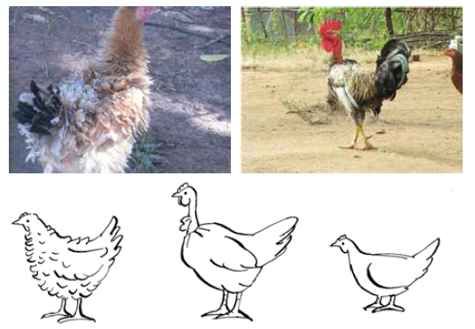

ការបង្កាត់ពូជ
- ការជ្រើសរើសមាន់ដែលមានសុខភាពល្អ និងមានរូបរាងល្អនៅតាមភូមិ ឬទីផ្សារគឺមានសារៈសំខាន់ ប្រសិនបើអ្នកចង់ធានាបាននូវហ្វូងសត្វដែលមានសុខភាពល្អ និងផលិតភាពខ្ពស់។ ដូច្នេះ អ្នកគួរតែដឹងពីរបៀបវិនិច្ឆ័យគុណភាពនៃពូជផ្សេងៗគ្នាក្នុងអាយុ និងភេទខុសៗគ្នា ដោយផ្អែកលើរូបរាង សំលេង និងអាកប្បកិរិយារបស់វា។
- ខាងក្រោមនេះ យើងនឹងណែនាំពីការណែនាំសាមញ្ញអំពីរបៀបជ្រើសរើសបក្សីដែលមានសំឡេងនៅអាយុផ្សេងៗគ្នា និងណែនាំពីអ្វីដែលត្រូវពិចារណាទាក់ទងនឹងការជ្រើសរើសពូជ។
ការជ្រើសរើសសាច់មាន់
វាមានសារៈសំខាន់ណាស់ក្នុងការស្វែងរកលក្ខណៈពិសេសផ្សេងៗគ្នានៅក្នុងកូនមាន់ អ្នកដាំដុះ មេមាន់ និងមាន់ជល់។ ជ្រើសរើស ឬទិញបក្សីថ្មីរបស់អ្នកនៅពេលព្រឹកព្រលឹម ដោយសារភាពតានតឹងពីការខ្វះទឹក ការផ្តល់ចំណី និងការសម្រាក វានឹងធ្វើឱ្យសត្វស្លាបភាគច្រើនមើលទៅហាក់ដូចជាឈឺ និងងងុយគេង។
កូនមាន់ដែលទើបញាស់ថ្មីដែលមានសុខភាពល្អគួរមានលក្ខណៈពិសេសដូចខាងក្រោម
- ប្រវែងរាងកាយនិងជម្រៅដែលត្រូវបានអភិវឌ្ឍយ៉ាងល្អ
- រោមភ្លឺ ស្ងួត ក្រាស់ និងពណ៌ចុះក្រោម
- ក្បាលពោះទន់
- សម្អាតផ្ចិតស្ងួត
- ចង្កាក្រាស់ជាមួយម្រាមជើងចំហ និងត្រង់
- ភ្នែកធំច្បាស់
- អាកប្បកិរិយារស់រវើក
អ្នកដាំដុះដែលមានសុខភាពល្អ និងល្អគួរតែមានលក្ខណៈពិសេសដូចខាងក្រោម
- គួរតែមើលទៅមានសុខភាពល្អ និងរស់រវើក
- រោមភ្លឺចាំងធម្មតា (អាចអាស្រ័យលើពូជ)
- ទំហំធំសម្រាប់អាយុ
- ភ្នែកភ្លឺច្បាស់
- សម្អាត និងស្ងួតចំពុះ និងរន្ធច្រមុះ
- សម្អាតរោមនៅជុំវិញរន្ធខ្យល់
- ជើងត្រង់និងម្រាមជើង
ស្រទាប់ស៊ុតដែលមានសុខភាពល្អ និងល្អគួរមានលក្ខណៈពិសេសដូចខាងក្រោមៈ * មើលទៅមានសុខភាពល្អ និងរស់រវើក * រោមធម្មតាសម្រាប់ពូជ * សិតសក់ក្រហម (ពណ៌ច្រើននៅពេលដាក់) * ភ្នែកថ្លា និងភ្លឺ * ចំពុះ និងរន្ធច្រមុះស្អាត និងស្ងួត * រោមស្អាតជុំវិញរន្ធខ្យល់ * ជើងត្រង់ និងម្រាមជើងត្រង់ មិនមានសញ្ញានៃជើងធំ * ជើងមិនស្រួច * បាតជើងមិនគួរមានពណ៌ 
នៅក្នុងហ្វូងតូចៗ វាងាយស្រួលក្នុងការពិនិត្យមើលថាតើមេមាន់កំពុងដាក់ឬអត់ (រូបភាព 38) ។ ពិនិត្យដោយដៃរបស់អ្នក។ ចម្ងាយរវាងឆ្អឹងសាធារណៈ (ខាងលើ) នឹងស្មើនឹងម្រាមដៃពីរ នៅពេលដែលមេមាន់ដាក់។ មានតែម្រាមដៃមួយប៉ុណ្ណោះដែលអាចឆ្លងកាត់រវាងឆ្អឹងសាធារណៈ នៅពេលដែលមេមាន់នៅខាងក្រៅ។ មាន់ដែលមានសុខភាពល្អ និងល្អគួរមានលក្ខណៈដូចខាងក្រោម
- ការប្រុងប្រយ័ត្ននិងធម្មជាតិការពារ
- រោមភ្លឺចាំង និងធម្មតាសម្រាប់ពូជ បរិមាណចំណីដែលបានផ្តល់ និងបរិភោគនៅអាយុផ្សេងៗគ្នានៃសត្វបក្សីក្នុងស្រុក
- ភ្នែកភ្លឺនិងច្បាស់
- សម្អាត និងស្ងួតចំពុះ និងរន្ធច្រមុះ
- សម្អាតរោមនៅជុំវិញរន្ធខ្យល់
- ជើងត្រង់និងម្រាមជើងដែលគ្មានសញ្ញានៃជើងមានស្នាម
- ទំហំធំទាក់ទងទៅនឹងមេមាន់
វាអាចជាអត្ថប្រយោជន៍មួយក្នុងការរក្សាកំណត់ត្រាអំពីការលូតលាស់ និងផលិតភាពរបស់បក្សីនីមួយៗ ដើម្បីជ្រើសរើសបក្សីទៅតាមលក្ខណៈដូចជា ការផលិតស៊ុត ការលូតលាស់ (ការផលិតសាច់) និងអាកប្បកិរិយារបស់កូន។ ការរក្សាកំណត់ត្រាអាចជួយអ្នកជ្រើសរើសស្រទាប់ល្អបំផុត ឬម្តាយល្អបំផុតដើម្បីការពារកូនមាន់។ សូមមើលជំពូកទី 8 សម្រាប់ឧទាហរណ៍អំពីការរក្សាកំណត់ត្រា។
ការជ្រើសរើសពូជ
- នៅពេលដែលអ្នកទទួលបានជោគជ័យក្នុងការបង្កើនផលិតភាព និងការរស់រានមានជីវិតរបស់សត្វបក្សីក្នុងស្រុករបស់អ្នកតាមរយៈការធ្វើឱ្យប្រសើរឡើងនូវការគ្រប់គ្រង ការស្នាក់នៅ ការចិញ្ចឹម ការការពារកូនមាន់ជាដើម។ អ្នកប្រហែលជាចង់បង្កើនផលិតភាពបន្ថែមទៀតដោយការណែនាំពូជប្រសើរជាងមុន។
- ពូជមួយគឺជាក្រុមបសុបក្សីដែលមានរាងកាយលក្ខណៈ និងរាងរោម។ លក្ខណៈពិសេសទាំងនេះត្រូវបានទទួលមរតកពីមួយជំនាន់ទៅមួយជំនាន់។ លក្ខណៈពិសេសផងដែរដូចជាសិតសក់ពណ៌នៃ lobes ត្រចៀកនិង shank ពណ៌និងប្រវែងជាធម្មតាត្រូវបានកំណត់ដោយពូជ។ នៅក្នុងពូជនីមួយៗ ពូជផ្សេងៗគ្នាអាចកើតឡើងជាធម្មតាត្រូវបានកំណត់ដោយពណ៌ plumage ។ ដូច្នេះ មេមាន់ពណ៌ស និងខ្មៅប្រហែលជាពូជខុសគ្នានៃពូជតែមួយ។
- រូបភាពទី 40 បង្ហាញពីពូជបីផ្សេងគ្នាដែលត្រូវបានរកឃើញជាទូទៅនៅក្នុងតំបន់ត្រូពិច ពោលគឺ សត្វស្លាប Frizzled, Naked-Neck និង Dwarf ។ ហ្សែនអាក្រាត-ក ត្រូវបានរកឃើញនៅស្ទើរតែគ្រប់ភូមិទាំងអស់ ហើយត្រូវបានគេជឿថា ជាការសម្របតាមធម្មជាតិ ដើម្បីជៀសវាងភាពតានតឹងពីកំដៅ។ រោមដែលស្រួយអាចមើលទៅឈឺនៅពេលក្រឡេកមើលដំបូង ប៉ុន្តែក៏ជារឿងធម្មតានៅក្នុងប្រព័ន្ធតាមភូមិភាគច្រើនផងដែរ។ បសុបក្សីតឿបង្ហាញពណ៌ស្តង់ដារ និងផ្លែព្រូន ប៉ុន្តែមានទំនោរទៅ 2/3 នៃទំហំធម្មតាសម្រាប់បសុបក្សី ដែលភាគច្រើនដោយសារតែ shanks ខ្លី។

- សត្វមាន់នៅក្នុងប្រព័ន្ធឧស្សាហូបនីយកម្មជាធម្មតាត្រូវបានរក្សាទុកសម្រាប់គោលបំណងពីរផ្សេងគ្នា នោះគឺការចិញ្ចឹមស៊ុត ឬសាច់។ ផលិតភាពខ្ពស់ក្នុងការផលិតស៊ុត ឬសាច់ គឺជាលទ្ធផលនៃកម្មវិធីបង្កាត់ពូជឯកទេស។ អ្វីដែលហៅថាពូជគោលបំណងពីរក៏ជាលទ្ធផលនៃកម្មវិធីបង្កាត់ពូជដែរ ហើយអាចបង្កើតពងបានច្រើន និងសាច់ច្រើនជាងបក្សីប្រពៃណី។
លក្ខណៈពិសេសរបស់សត្វស្លាបដែលមានឯកទេសក្នុងការផលិតពង ការផលិតសាច់ ឬទាំងពីរ (គោលបំណងពីរ) ត្រូវបានបង្ហាញក្នុងរូបភាពទី 41។ មេមាន់គឺ "រាងទូក" ជាមួយនឹងខ្នងត្រង់វែង និងបាតធំ។ អ្នកផលិតសាច់ (មាន់ជល់) មានជើងវែងក្នុងទីតាំងត្រង់ជាង និងស្លាបនៅទីតាំងខ្ពស់នៅលើដងខ្លួន។ ពូជដែលមានគោលបំណងពីរ គឺជាទម្រង់មួយនៅចន្លោះស្រទាប់ និងកូនមាន់។ ពូជក្នុងស្រុកច្រើនតែមានទម្រង់នៃពូជដែលមានគោលបំណងពីរ ទោះបីមិនសូវធ្ងន់ក្នុងទម្រង់ និងទំហំក៏ដោយ។  ពូជធម្មតាដែលផលិតពង (ឆ្វេង) សាច់ (កណ្តាល) និងទាំងពីរ (ស្តាំ)
ពូជធម្មតាដែលផលិតពង (ឆ្វេង) សាច់ (កណ្តាល) និងទាំងពីរ (ស្តាំ)
វាមានសារៈសំខាន់ណាស់ក្នុងការជ្រើសរើសសត្វស្លាបដែលសមស្របនឹងប្រភេទនៃការផលិតដែលអ្នកមានក្នុងចិត្ត ហើយដែលសមស្របនឹងលក្ខខណ្ឌដែលពួកវាត្រូវបានរក្សាទុក ឧ. ជួរសេរី ឬការបង្ខាំង។
- វិស័យពាណិជ្ជកម្មបានបង្កើតកូនកាត់ដែលមានឯកទេសខ្ពស់ (ឆ្លងកាត់ពូជជាច្រើន) ដែលស្រទាប់អាចផលិតពងបាន 300 ពងក្នុងមួយឆ្នាំ ហើយកូនមាន់អាចឡើងដល់ 2 គីឡូក្រាមក្នុងរយៈពេល 6 សប្តាហ៍។ ដើម្បីទទួលបានផលិតកម្មខ្ពស់នេះ កូនកាត់មានតម្រូវការជាក់លាក់ចំពោះការគ្រប់គ្រង ការចិញ្ចឹម និងការគ្រប់គ្រងជំងឺ ហើយតម្លៃផលិតកម្មគឺខ្ពស់។ ដូច្នេះជាធម្មតា ពួកវាមិនស័ក្តិសមនៅក្នុងប្រព័ន្ធជួរសេរី និងប្រព័ន្ធជួរទំនេរដែលប្រសើរឡើងនោះទេ។
- ក្នុងចំណោមមាន់ទាំងអស់ដែលចិញ្ចឹមនៅអ៊ូហ្គង់ដា ជាង 80% គឺជាមាន់ជនជាតិដើមភាគតិច។ មិនដូចស្រទាប់ពាណិជ្ជកម្ម និងមេមាន់ទេ ពូជមាន់ក្នុងស្រុករបស់យើងមិនត្រូវបានកំណត់ច្បាស់លាស់ទេ។ សម្រាប់ហេតុផលនេះ វាពិបាកក្នុងការនិយាយថាពូជនេះគឺសម្រាប់ Lugbara, Alur, Iteso, Acholi ឬសូម្បីតែដោយលក្ខណៈពិសេសហ្សែនជាក់លាក់។ ដូច្នេះ សូមយើងចាត់ទុកមាន់ក្នុងស្រុករបស់យើងទាំងអស់ជាពូជដូចគ្នា ព្រោះមិនមានពណ៌រោមឯកសណ្ឋាន ប្រភេទសិតសក់ លក្ខណៈរបស់ចង្កា- កំណត់អត្តសញ្ញាណពួកវា។
- មាន់ក្នុងស្រុកដូចដែលបានបញ្ជាក់មុននេះ ដោយគ្មានភាពប្រសើរឡើងក្នុងការអនុវត្តការចិញ្ចឹមជាមូលដ្ឋាននៅតែជាពូជដែលផ្តល់ទិន្នផលទាប ទោះបីជាមានតម្លៃទីផ្សារល្អក៏ដោយ។ ការកែលម្អពូជរបស់ពួកគេដោយជ្រើសរើសពូជល្អ និងការបង្កាត់ពូជផងដែរ- ជាមួយនឹងការភ្ញាស់តាមកម្មវិធីនឹងជួយយើងបង្កើនភាគហ៊ុនរបស់យើងយ៉ាងងាយស្រួលដើម្បីបំពេញតម្រូវការទីផ្សារ។
- នៅប្រទេសអ៊ូហ្គង់ដា ថ្មីៗនេះ មជ្ឈមណ្ឌលបង្កាត់ពូជសត្វជាតិបានណែនាំពូជ Kuroiler ដែលជាពូជមាន់មានគោលបំណងពីររបស់ជនជាតិឥណ្ឌា។ Kuroilers គឺជាមាន់ធ្ងន់ ហើយលូតលាស់លឿន ដោយគ្មានអាកប្បកិរិយា។ ពួកវាអាចរស់បានដោយសេរី ដូចមាន់ក្នុងស្រុករបស់យើងដែរ។ ដូច្នេះ ពួកវាអាចប្រើសម្រាប់ការបង្កាត់ពូជជាមួយមាន់ជនជាតិដើមភាគតិចរបស់យើង។ ជាសំណាងល្អ ពួកវាជាច្រើនត្រូវបានណែនាំនៅក្នុងតំបន់ West Nile ទាំងមូល និងផ្នែកខ្លះនៃភាគខាងជើង។
ការបន្តពូជ
- ការបង្កាត់ពូជគឺត្រូវរួមបញ្ចូលពូជពីរផ្សេងគ្នាដើម្បីបង្កើតកូនដែលបង្កើតពង ឬសាច់ដែលកសិករចង់បាន។ ការបង្កាត់ពូជធ្វើអោយប្រសើរឡើងនូវការលូតលាស់ និងផលិតកម្ម។ ជាឧទាហរណ៍ គូរ៉ូល័រ និងសត្វស្លាបក្នុងស្រុកនាំឱ្យកូនលូតលាស់លឿន និងពងកាន់តែច្រើន។ ប៉ុន្តែកូនចៅក៏បាត់ទម្លាប់ភ្ញាស់ពងដែរ។ លើសពីនេះ កូនចៅជារឿយៗមានភាពធន់នឹងលក្ខខណ្ឌជំងឺក្នុងតំបន់ជាង kuroiler មេ។
- ដើម្បីបង្កើនផលិតកម្មពីមាន់ក្នុងស្រុក ការបង្កាត់ពូជជាមួយពូជដទៃទៀតអាចត្រូវបានអនុវត្ត។ ទោះជាយ៉ាងណាក៏ដោយ វាមានសារៈសំខាន់ណាស់ក្នុងការពិគ្រោះជាមួយពេទ្យសត្វ ដែលអាចណែនាំពូជដែលសមស្រប និងអាចរកបាន ដើម្បីបង្កើនផលិតកម្មស៊ុត ការលូតលាស់ ឬទាំងពីរ។ វាក៏សំខាន់ផងដែរក្នុងការដឹងថាកូនចៅនឹងទទួលបានគុណសម្បត្តិខុសៗគ្នាពីឪពុកម្តាយដែលជាពូជសុទ្ធ។
- វាក៏សំខាន់ផងដែរក្នុងការសង្កត់ធ្ងន់ថាប្រសិនបើការបង្កាត់ពូជត្រូវបានណែនាំនៅថ្នាក់ភូមិនោះ វាជារឿងសំខាន់ដែលការគ្រប់គ្រង ការផ្តល់ចំណី និងគម្រោងការពារសុខភាពត្រូវបានធ្វើឱ្យប្រសើរឡើង។